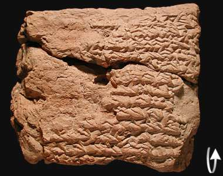

Monthly Text

The back of this tablet describes how Jupiter was in the zodiac sign Aquarius (the Water Carrier); Mercury was in Libra (The Scales); Saturn was in Taurus (The Bull); Mars was in Sagittarius (The Archer).
Around the 7th, Mercury's last appearance was in the east of Libra and Jupiter became stationary in Aquarius.
Around the 28th, Saturn was visible in the east after sunset. On the 29th, Mars reached Capricorn (The Goat).
That month, the river level, from the 15th until the 24th, rose 6 fingers. At the end of the month, the river level fell by 2 fingers. (The rest of the text is damaged but it mentions soldiers of the king and the general of Babylonia).
Tablet translation
back...
|